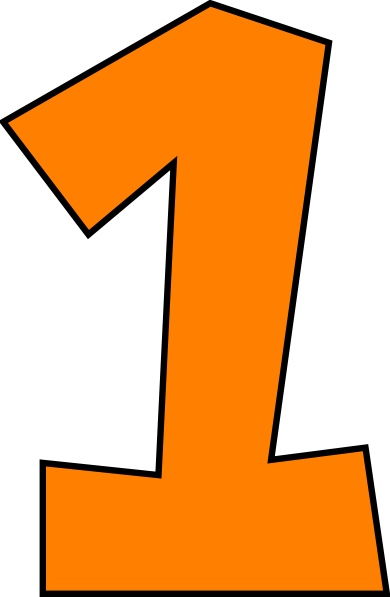
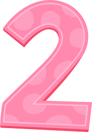

About
Reviews
Contact
Schedule a Session Today!
Katrine Philippides has over three years of therapist counseling and currently works at a middle school as a licensed social worker.

Four Phases of Counseling

Orietnation phase develops trust by communicating prior experiences and daily struggles.
Katrine's goal is to build a safe open communcation enviroment

Identification phase involves discovering any issues and deciding on a progress plan to work on.
Working phase entails diving into the issues and working on yourself. Past experiences are explored, this is where the progress occurs.
Resolution phase embraces progress that has made and tracking against the progress plan. Consistent progress is a journey.
This phase provides reflection, but also looks forward to additonal opportunities.
Call to action. It's time!
Sign up for our product by clicking that button right over there!